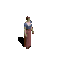
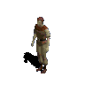

| |
任务介绍
霍拉赞圣殿
Horazons Sanctum |
可以把它想成包含四块的一片广大区域:
- 霍拉赞的房间
- 地道
- 地坑
- 霍拉赞的避难处
|
霍拉赞的房间
虽然无法证实有若干房间，但大体应该如下:
书房
该房间中可以找到如下书籍:
- 有关石人的书
- 火焰生物(应该包含有关 Incinerator 的一些信息)
书籍(由玩家角色所读)
霍拉赞所著的"火焰生物"，读起来应该很有趣.
注: 关涉及石人法术信息的书与霍拉赞圣殿关联的推测是有事实根据的, 因为所有这些声音文件在MPQ文件中都是一个紧接一个出现的, 中间没有被其他任务或其他东西所中断.
练习间
除了其他东西, 在这里还可以找到秘术缚环.
注: 其中提到了秘术缚环 Grimspike 卷轴的所在处, 该处可能是书房或其他地方.
该房间连接到地道
死去的霍拉赞及其日记所在之处.
注: 霍拉赞很可能因为下面三个原因而死亡:
-) 找到他的日记, 如果霍拉赞还活着就没有必要, 你完全可以直接跟他谈话获知有关恶魔的信息.
-) 他没能到达自己的避难处, 通往避难处的地道中有一只恶魔拉住去路.
-) Pepin 对你只见其尸而没找到其他东西的结果不会感到惊讶.
地道
这些地道通往一处地坑以及霍拉赞的避难处, 目前已经关闭(一处开关可以打开). 下述玩家角色的对白与地道入口有关(如果你不使用开关就想进入的话)
[也许你需要寻求某个镇民的协助才能进入地道或霍拉赞的避难处，这就意味着同时要完成多件任务]
|
 |
Player Character:
-)也许是从另一面锁上的.
-)看起来已经锈死了.
-)也许有其他道路.
注: 上面的对白应该与避难处有关, 最终玩家进入那里, 而且需要阅读三本书, 这三本书在地狱火版本中继续沿用(这三本书削弱了 Na-Krul): |
|
Player Character:
-)圣灵在上.
-)束手就擒, 否则就去死.
-)如果你有敌意.
-)幻惑已经消除. |
地坑
阿兹莫丹的副官所在处.
避难处
对此一无所知.
|
进入圣殿之前
古书(由玩家角色所读)
"让这卷书作为一个警告. 此处为禁地. 原路返回, 否则性命不保. 召唤并束缚生物于此的霍拉赞会让死亡降临于胆敢跨过5根柱子的人. 你已经看到警告了.
|
|
相关任务 |
霍拉赞囚困的恶魔
触发: 两处房间内的两份书文.
要点: 摧毁霍拉赞的两个召唤恶魔.
奖励: 未知.
阿兹莫丹的副官
霍拉赞的日记(由玩家角色所读)
这看起来像是日记. "看起来我似乎带了点东西过来, 尽管我无法控制自己. 被我的星阵陷阱捕获的生物是一只致命的恶魔. 我已经把它束缚在了地坑底部, 但它杀死了我送入其中的任何东西. 虽然它无法逃脱, 但也挡住了避难处的归路. 我曾试图用开关打开地道让其离去, 但恐怕它没那么好骗. 如果我能把它引到其他地方的话..."
注: 在前面的术士任务中提到, 这个恶魔可以自由地在地坑中移动, 只要打开关闭的地道就会将它放出来, 而且不需要读任何书册, 因此它很有可能是另一个被困住的副官.
贝利亚的副官 Grimspike
卷轴(由玩家角色所读)
"贝利亚的副官是 Grimspike. 小心这个恶魔, 他的力量强大莫测. 读了此卷并在秘法缚环处念出他的名字就可以召唤他" 嗯…秘法缚环.
注: Grimspike 肯定是该任务的一部分(请参看凯恩的任务对白)
|
 |
Wirt:
恶魔的护理和喂养我一点也不感兴趣. 这里给你提个醒: 如果有可能, 杀死你在下面遇上的所有东西. |
 |
Adria:
你必须不惜一切代价消灭霍拉赞囚困在圣殿中的2只恶魔。如果他们逃脱的话，就会与这个世界连接上，到时候一切都会变成孩童口中的故事. |
 |
Cain:
那么, 你想知道地狱之战的知识了? 神秘的古书中提到这些大战将决定哪个恶魔领主来统治地狱. 书中还提到了两只领主之间的残酷较量: 领导长角恶魔的阿兹莫丹对光明军队以及谎言之王, 贝利亚. 他们直接的仇恨是无尽的. 他们之间的嫌恶就连他们自己都说不清. 传说中多处提到疯掉的法师霍拉赞把这两大恶魔的副官困在了圣殿中. 这些恶魔所占据的通路是最危险的. 你肯定在找这条通路, 那么请多加小心, 我的朋友. |
 |
Farnham:
在我看来是个好主意, 你最好马上行动. |
 |
Gillian:
这事已经超出我的所知范围了. 我想崔斯特瑞姆里有个人能帮到你, 那就是凯恩无疑. |
 |
Griswold:
真是奇事, 我在教堂下没有困多久, 恐怕帮不上什么忙. 但学富五车的凯恩肯定能给你莫大帮助. |
 |
Ogden:
这听起来像是一些黑暗生物. 我对此一无所知, 但我想说故事的那位也许知道这个传说. |
 |
Pepin:
霍拉赞疯了, 那里有不容干涉的力量存在. 如果你最后找到这蠢货支离破碎的尸体的话, 我肯定一点也不惊讶. |
了解石人
Trigger: 石人相关的书籍
Gist: 虽然没有说明，但看起来是一个了解石人的任务.
Reward: 了解石人.
书籍(由玩家角色所读)
-)"那么通过将灵魂束缚在加工后的岩石上就会赋予其生命." 这听起来像是某种法术.
-)*念咒* 如 warior05.wav (这个语音不止战士才有)
|
|
|